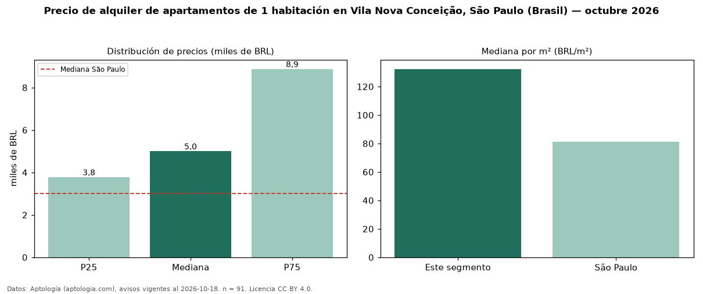

Precio de alquiler de apartamentos de 1 habitación en Vila Nova Conceição, São Paulo (Brasil) — octubre 2026
En Vila Nova Conceição, São Paulo (Brasil), la mediana de canon mensual de apartamentos de 1 habitación es BRL 5.000, según 91 avisos vigentes. Frente a la mediana de São Paulo para apartamentos de 1 habitación (BRL 3.000), queda 67 % por encima. Por metro cuadrado, la mediana es BRL 132/m² al mes (n = 85 avisos con área), 63 % por encima de São Paulo (BRL 81,11/m²). Son 49 % de los 186 avisos de apartamentos en alquiler de la zona, cuya mediana general es BRL 10.065 (−50 %). El área mediana anunciada es 44 m². La mitad central de los avisos va de BRL 3.776 a BRL 8.875 (razón 2,4), una dispersión alta. La cuota de mantenimiento o condominio mediana declarada es BRL 1.300 al mes (n = 91), aparte del canon. 75 % de los avisos con el dato declara parqueadero o cochera. Datos: Aptología (aptologia.com), CC BY 4.0 — https://www.aptologia.com/br/aluguel/sao-paulo/vila-nova-conceicao. Archivos: PDF, CSV con las cifras y gráfica PNG.

| Avisos únicos | 91 |
|---|---|
| Percentil 25 | COP 3.776 |
| Mediana | COP 5.000 |
| Percentil 75 | COP 8.875 |
| Mediana por m² | COP 132 |
Fuente: avisos vigentes de portales inmobiliarios recopilados por Aptología, deduplicados (mínimo 30 avisos únicos por celda). Precios pedidos, no cerrados. Fecha: 2026-10-18.